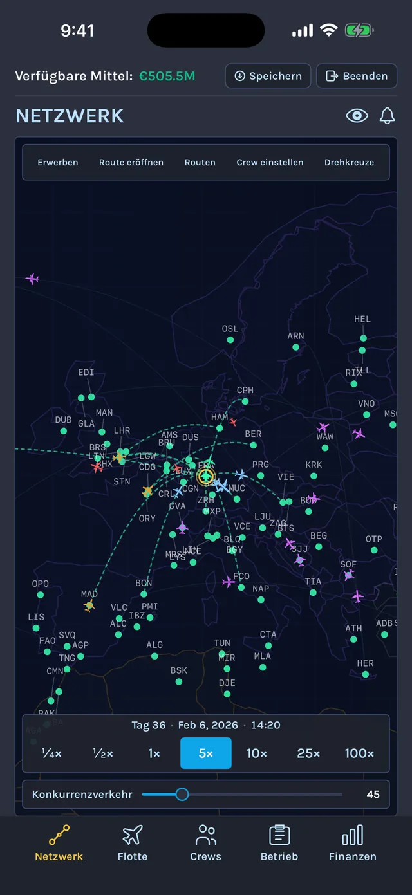
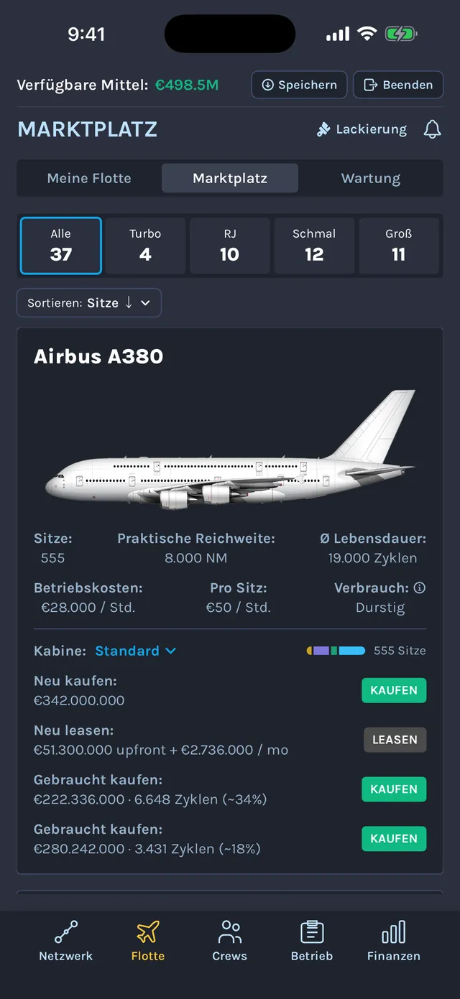
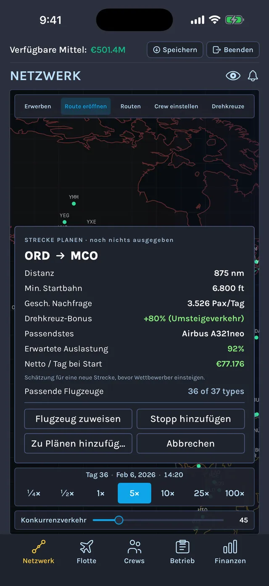
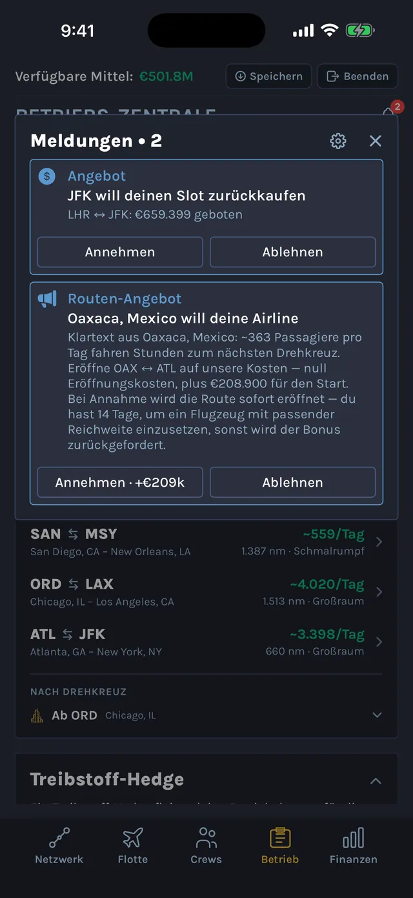
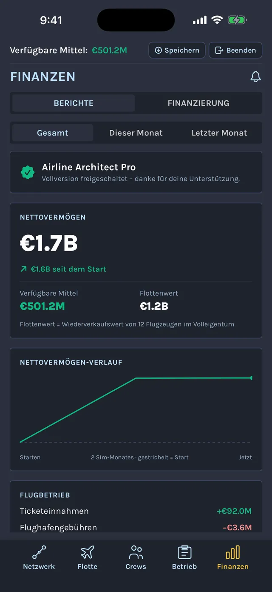
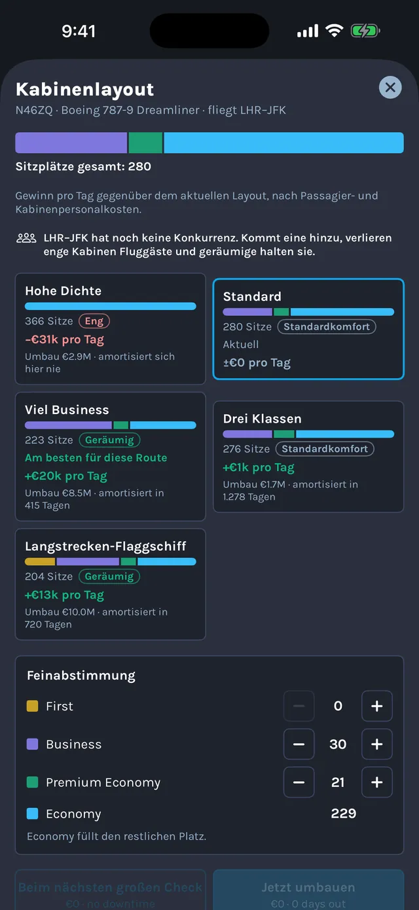
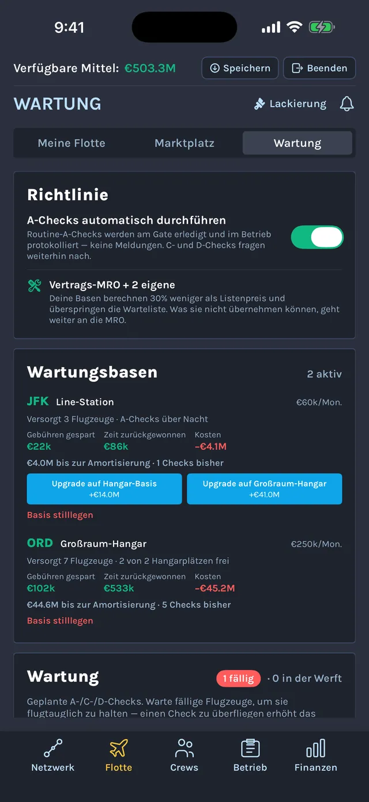
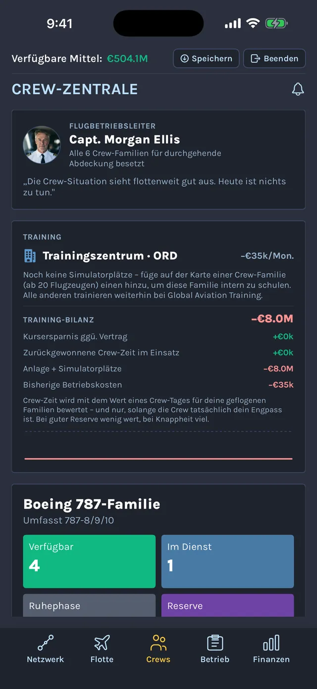
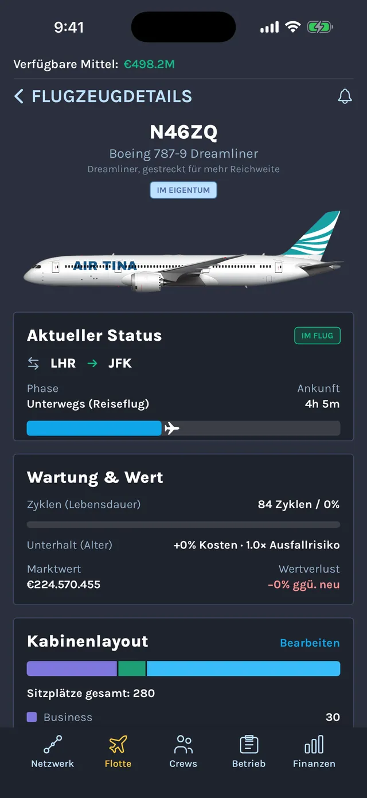

Airline ArchitectDer Airline-Manager für iPhone und iPad
Du beginnst mit 20 Millionen Startkapital und einem leeren Hangar. Kauf oder lease deinen ersten Jet, eröffne Routen zwischen 469 echten Flughäfen, stell die Crews dafür ein und mach aus einem Start-up mit einem einzigen Flugzeug eine weltweite Fluggesellschaft. Die Simulation pausiert nie: Jede Entscheidung triffst du, während der Rest deiner Airline weiterfliegt.
Eine realistische Airline-Simulation, kein Klickspiel
Airline Architect ist eine tiefgehende Airline-Management-Simulation für alle, die Wirtschaftssimulationen mit echten Zahlen mögen. Ein echtes Modell der Passagiernachfrage macht die Streckenwahl zum Kern des Spiels: Setz einen Großraumjet auf eine schwache Strecke, und er fliegt halb leer. Setz einen kleinen Regionaljet auf eine stark gefragte Hauptstrecke, und du verschenkst Geld.
Alles im Spiel ist der realen Luftfahrt nachgebildet: echte Flughäfen und Inselpisten, reale Flugzeuge mit ihrer tatsächlichen Reichweite, Sitzzahl und ihren Betriebskosten, Crews mit echten Dienst- und Ruhezeiten und planmäßige Wartungs-Checks. Du triffst die strategischen Entscheidungen. Deine Flugzeuge fliegen ihre Routen, nehmen Passagiere an Bord und spielen ganz von selbst Umsatz ein.

Streckennetz
Bau ein Streckennetz zwischen 469 echten Flughäfen auf
Wähle eine Startregion irgendwo auf der Welt und erweitere dein Netz Stadt für Stadt. Eröffne Routen, verknüpfe mehrere Städte zu Umläufen und baue Drehkreuze, die jede Anschlussroute stärker machen. Die Karte umspannt den ganzen Globus, eine Tag-und-Nacht-Grenze wandert darüber, und echte Nachtflugverbote sperren Städte für späte Abflüge.

Flotte
Wähle aus 37 echten Flugzeugtypen, vom Turboprop bis zum A380
Jeder Typ fliegt mit seiner echten Reichweite, Sitzzahl und seinen echten Betriebskosten: Turboprops für kurze Pisten wie Dash 8 und ATR 42, Embraer- und CRJ-Regionaljets, die A320- und die 737-Familie sowie Langstrecken-Großraumjets bis hin zu 787, A350, 747-8 und A380. Kauf neu, lease oder stöbere auf dem Gebrauchtmarkt. Jede Zelle altert, und alte Maschinen kosten mehr im Unterhalt.

Streckenplanung
Prüfe jede Strecke mit echten US-Ticketpreisen
Bevor du etwas ausgibst, zeigt dir der Streckenplaner die Nachfrage, deinen Drehkreuz-Bonus und den Gewinn, den eine Route pro Tag bringen sollte. Die Ticketpreise auf US-Strecken stammen aus den Flugpreisdaten des US-Verkehrsministeriums für 2025 und 2026 und decken rund 5.800 Flughafenpaare ab. Eine dünne Strecke, die nur eine Airline fliegt, kann das Doppelte des üblichen Preises bringen, eine stark beflogene Hauptstrecke von Küste zu Küste dagegen weniger, als du denkst.

Live-Betrieb
Die Simulation pausiert nie
Angebote von Flughäfen, technische Defekte, Crew-Engpässe, Unwetter und Schachzüge der Konkurrenz landen als Live-Entscheidungen auf deinem Tisch, während alle anderen Flugzeuge weiterfliegen. Echte Jahreszeiten prägen die Störungen: Hurrikansaison, Winterstürme und Monsun. Drossle das Tempo auf ein Viertel, um in Ruhe nachzudenken, oder lass die Zeit 100-mal schneller laufen und sieh zu, wie der Umsatz hereinkommt. Braucht etwas deine Aufmerksamkeit, bremst das Spiel von selbst ab.

Finanzen
Vom Start-up an die Börse
Monatsberichte zeigen genau, wohin das Geld fließt. Finanziere die Expansion mit Krediten oder bring deine Airline an die Börse, mit Live-Aktienkurs, aktivistischen Investoren und einem Vorstand, der dich absetzen kann. Ganz oben angekommen? Dann nimm konkurrierende Airlines unter die Lupe, übernimm sie und überstehe die Integration.
Steuere jeden Bereich deiner Airline

Gestalte jede Kabine
Wähle ein Layout von „Hohe Dichte“ bis „Langstrecken-Flaggschiff“ oder verteile die Sitze selbst auf First, Business, Premium Economy und Economy, und sieh, bevor du dich festlegst, wie viel Gewinn pro Tag jede Variante bringt.

Plane die Wartungs-Checks
Baue Hangars und Line-Stationen und plane jeden A-, C- und D-Check. Hält ein großer Check ein Flugzeug am Boden, kannst du seine Routen mit einer Reservemaschine abdecken, Ersatz erwerben oder die Route pausieren.

Stell Crews ein und bilde sie aus
Crews halten echte Dienst- und Ruhezeiten ein, eine Crew kann also nicht ewig fliegen. Stell Piloten ein, eröffne ein Trainingszentrum, ernenne einen Flugbetriebsleiter und sorg dafür, dass jede Flugzeugfamilie genug Crews hat.

Flieg in deinen eigenen Farben
Gestalte die Lackierung deiner Airline und sieh sie auf jedem Flugzeug, das du besitzt, in der Flotte und auf der Karte.
Eine Welt, die lebendig wirkt
Drehkreuze und Lounges
Sichere dir eine Stadt mit einem Drehkreuz und einer Lounge, bau Kundentreue auf und halte Konkurrenten fern. Eine Live-Ansicht der Amortisierung verrät dir, ob es sich lohnt.
Konkurrierende Airlines
Konkurrenten machen dir deine profitabelsten Routen streitig und fliegen Flotten, die der realen Welt entsprechen.
Echte Jahreszeiten und echtes Wetter
Hurrikansaison, Winterstürme und Monsun bestimmen, wo und wann Störungen zuschlagen.
Game-Center-Erfolge
Meilensteine von deiner ersten Route bis zu deiner ersten Übernahme, festgehalten in Game Center.
Gemacht für iPhone und iPad
Airline Architect ist nativ für iPhone und iPad entwickelt, mit einem Layout, das die volle Breite des großen Bildschirms nutzt. Deine Airlines werden über iCloud synchronisiert: Plane unterwegs eine Route auf dem iPhone und treib die Expansion zu Hause auf dem iPad voran.
Spielstände werden über iCloud zwischen iPhone und iPad synchronisiert
Ehrlich gesagt eine der besten Airline-Simulationen, die ich gespielt habe. So viele andere trauen sich nicht, Wartungsoptionen einzubauen oder echte Rückschläge in diesen Bereich zu bringen. Dass es keine Pay-to-Play-Option gibt, ist großartig, erarbeite es dir. Es braucht Zeit. Ich hatte 3 Airlines am Laufen, bevor ich die gefunden habe, die am besten funktioniert hat.
Macht so viel Spaß, und du hast die volle Kontrolle.
Aus dem Englischen übersetzt
Find your groove!
Honestly one of the best airline sims I’ve played. So many others are scared to put the maintenance options, or put real setbacks into the aspect. The fact there is no option for pay to play is amazing, earn it. It takes time. I had 3 airlines going before I found the one that worked best.
So much fun, and you are fully in control.
Dieses Spiel macht so viel Spaß!
Ich wünschte, es gäbe mehr Flughäfen innerhalb der USA zur Auswahl, und ich wünschte, man könnte alle Benachrichtigungen ein- und ausschalten, aber abgesehen von diesen zwei Kritikpunkten ist es insgesamt super
Aus dem Englischen übersetzt
Finally a fun airline tycoon game
This game is so much fun to play!
I wish there were more airport to choose from within the United States and I wish there was a way to toggle all of the notifications, but besides those two gripes it’s great overall
Ich liebe dieses Spiel! So gut gemacht und so interessant, eine eigene Airline zu besitzen. Ich habe durch dieses Spiel so viel über die Branche gelernt und fühle mich so gut informiert über so coole Details zu Airlines, die ich sonst nie erfahren hätte. Hut ab vor dem großartigen Erfinder dieses Spiels! 🙌
Aus dem Englischen übersetzt
This game has taught me so much
i love this game! so well made and so interesting getting to own an airline, i’ve learned so much about the industry through this game and feel so educated on such cool details about airlines that i otherwise would have never known. hats off to the amazing inventor of this game! 🙌
Bis jetzt liebe ich dieses Spiel total!! Gibt es eine Möglichkeit, einer gekauften Airline, die ich in meine Gruppe übernommen habe, Flugzeuge hinzuzufügen?
Aus dem Englischen übersetzt
Amazing fun
Absolutely loving this game so far!! Is there a way to add aircraft to a purchased airline I have acquired as part of my group?
Mir hat es richtig Spaß gemacht, dieses Spiel zu spielen. Es fängt realistisch ein, wie es wohl sein muss, ein Unternehmen von Grund auf aufzubauen. Entscheidungen zu treffen, etwa meine ersten Routen und den passenden Flugzeugtyp auszuwählen, und zu sehen, wie sich diese Entscheidungen auf meinen Gewinn ausgewirkt haben, war großartig. Damit zu experimentieren, ob ich meine Airline organisch wachsen lasse oder Kredite nutze, um sie schneller wachsen zu lassen, war echt cool. Dieses Spiel hat so viele Ebenen. Sobald meine Airline etabliert war, konnte ich zum Beispiel sehen, wie viel Konkurrenz ich durch andere Fluggesellschaften hatte, und mich dafür entscheiden, etwa einen Hub aufzubauen, eine Werbekampagne zu starten, ein Treueprogramm anzubieten usw.
Tolles Spiel!
Aus dem Englischen übersetzt
Super fun and engaging
I’ve really enjoyed playing this game. It realistically captures what it must be line to build a company from the ground up. Making decisions like choosing my initial routes and appropriate type of plane and seeing how those decisions affected my bottom line was amazing. Experimenting with allowing my airline to grow organically versus taking advantage of loans to grow my airline faster was really cool. There are so many layers to this game. For example , once my airline was established, I could see how much competition I had from other carriers, and choose to do things like establishing a hub, doing an ad campaign, providing loyalty program, etc.
Great game!
Danke, dass du dein Spiel regelmäßig aktualisierst. Dieses Spiel macht süchtig und kann einen stundenlang beschäftigen. Ich schätze die Möglichkeit, mit anderen Airlines zu fusionieren oder sie zu übernehmen. Ein paar Vorschläge:
• Könnte man anpassen, wie Zwischenstopps zu Routen hinzugefügt werden, damit längere Strecken möglich werden? Zum Beispiel HKG nach EZE? Selbst als ich versucht habe, einen Zwischenstopp in LAX einzufügen, hat das System die Route nicht zugelassen.
• Könnte man im Routen-Tab einen Filter hinzufügen, um Routen von verschiedenen Hubs zu trennen? Oder von verschiedenen Airlines nach einer Fusion?
• Könnte man bei den Routen einen Filter einbauen, um von der ältesten zur neuesten zu sortieren?
• Könnte man nach der Fusion zweier Airlines getrennte Liveries verwenden?
• Könnten wir den A359-ULR und den A35K-ULR bekommen?
Danke und Grüße!!
Aus dem Englischen übersetzt
Great Simple Aviation Game
Thank you for updating your game consistently. This game is addictive and can occupy hours of play. I appreciate the ability to merge or acquire other airlines. Some suggestions:
• Could we adjust how stops are added on routes so longer paths become possible? For example, HKG to EZE? Even when I tried adding a stop at LAX, the system would not allow the route.
• Could we add a filter in the Route tab to separate routes from different hubs? Or from different airlines after a merger?
• Could we include a filter in Route to sort from oldest to newest?
• Once two airlines merge, could we use separate liveries?
• Could we have the A359-ULR and A35K-ULR?
Thank you and cheers!!
So ein spaßiges Spiel, hab’s so ungefähr 2 Stunden gespielt, absolut unglaubliches Spiel. Ich wünschte nur, es gäbe keine Paywall, weil ich nicht wirklich £10 für ein Spiel zur Seite legen kann. Aber wenn du £10 übrig hast, spiel es auf jeden Fall, super spaßiges und kreatives Spiel!
Aus dem Englischen übersetzt
Great app!
Such a fun game played it for like 2 hours absolutely incredible game, just wish there wasn’t a pay wall as I don’t really have £10 to set aside for a game. But if you have £10 spare definitely play super fun and creative game!
Kostenlos spielen. Einmal zahlen, unbegrenzt wachsen.
Airline Architect kannst du kostenlos im App Store laden. In der Gratisversion baust du eine Airline mit bis zu 6 Flugzeugen und 5 Routen auf. Das reicht für dein erstes Drehkreuz und um herauszufinden, ob das Spiel etwas für dich ist. Ein einziger Einmalkauf schaltet die Vollversion ohne Begrenzungen frei.
Kein Abo
Keine Werbung
Keine Energie-Timer und kein Warten aufs Einsammeln
Häufige Fragen zu Airline Architect
Ist Airline Architect kostenlos?
Ja. Airline Architect kannst du kostenlos laden und spielen. Die Gratisversion begrenzt deine Airline auf 6 Flugzeuge und 5 Routen, das reicht für dein erstes Drehkreuz. Ein Einmalkauf hebt die Grenzen für immer auf. Es gibt kein Abo und keine Werbung.
Gibt es Airline Architect für Android oder PC?
Derzeit nicht. Airline Architect ist für iPhone und iPad gemacht und erfordert iOS oder iPadOS 18 oder neuer.
Brauche ich zum Spielen eine Internetverbindung?
Nein. Die ganze Simulation läuft auf deinem iPhone oder iPad, ohne Konto und ohne Server. Eine Verbindung brauchst du nur für die iCloud-Synchronisierung deiner Spielstände, für Game Center und für den Einmalkauf.
Wie realistisch ist Airline Architect?
Das Spiel nutzt 469 echte Flughäfen, 37 reale Flugzeugtypen mit ihrer echten Reichweite, Sitzzahl und ihren Betriebskosten, echte US-Flugpreisdaten für rund 5.800 Flughafenpaare, Dienst- und Ruhezeiten für Crews sowie planmäßige A-, C- und D-Checks. Namen echter Airlines erscheinen nur als sachliche Referenzdaten, eine Verbindung zu ihnen besteht nicht.
Kann ich dieselbe Airline auf iPhone und iPad spielen?
Ja. Spielstände werden automatisch über iCloud synchronisiert. Melde dich auf beiden Geräten mit demselben Apple Account an und aktiviere iCloud Drive.
Kann ich das Spiel pausieren?
Eine Pausetaste gibt es bewusst nicht: Störungen erreichen dich als Entscheidungen, während der Rest deiner Airline weiterfliegt. Das Tempo bestimmst du mit Zeitstufen von einem Viertel bis zum 100-Fachen, und wenn ein Ereignis deine Aufmerksamkeit braucht, bremst das Spiel von selbst ab.
Was unterscheidet Airline Architect von anderen Airline-Manager-Spielen?
Airline Architect ist in erster Linie eine Einzelspieler-Simulation. Es gibt keine Energie-Timer, kein Warten aufs Einsammeln und keine Werbung. Nachfrage, Ticketpreise, Crews und Wartung sind der echten Branche nachgebildet. Die Strategie liegt also darin, das richtige Flugzeug für den richtigen Markt zu finden, nicht im schnelleren Tippen.
Welche Sprachen unterstützt das Spiel?
Deutsch und Englisch.
Deine erste Route wartet
Lade Airline Architect kostenlos im App Store und bring deine Airline in die Luft.